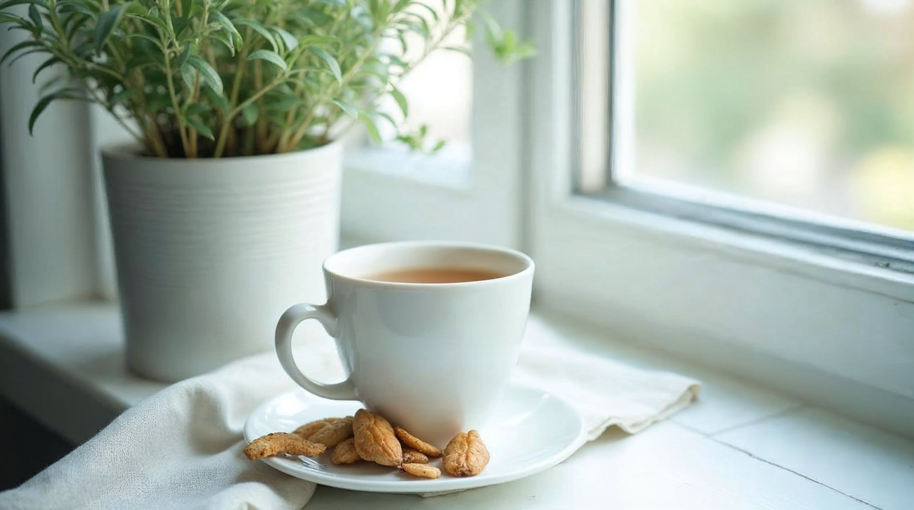
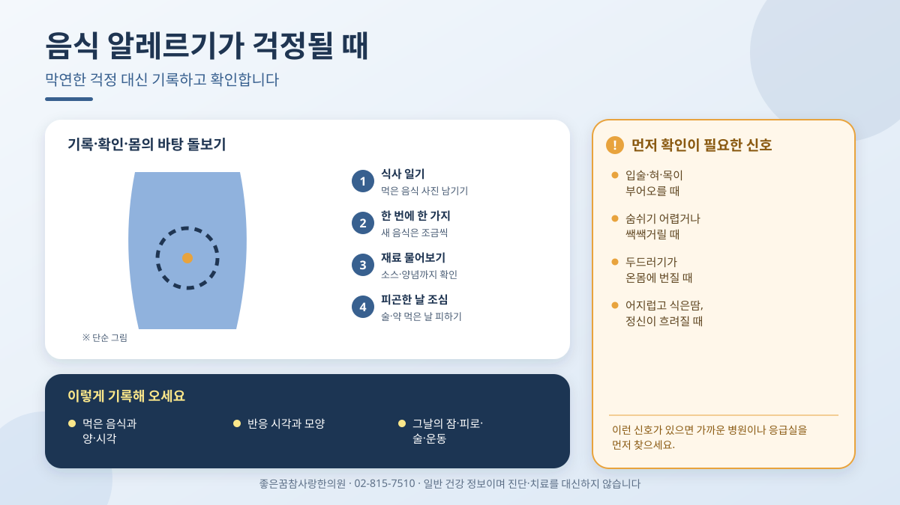

이종호 한의사 감수좋은꿈참사랑한의원 대표원장 (한의사 면허번호 19769)발행 2026-11-26 · 수정 2026-11-26
이 글의 차례
점심에 새우볶음밥을 먹고 사무실로 돌아왔는데 입술 주변이 간질간질합니다. 거울을 보니 목 언저리에 붉은 자국이 몇 개 올라와 있습니다. 한 시간쯤 지나니 가라앉긴 했지만, 그 뒤로 새우를 볼 때마다 괜히 망설여집니다. 그런데 지난번에는 같은 걸 먹고도 아무렇지 않았던 것 같기도 합니다.
진료실에서 음식 알레르기를 걱정하시는 분들의 이야기는 대개 이렇게 시작합니다. 확실하지는 않은데 뭔가 이상했던 경험이 있고, 그 뒤로 먹는 것이 조심스러워진 것이지요. 어떤 분은 하나둘 피하는 음식이 늘어나 식탁이 점점 좁아졌다고 하십니다.
음식을 먹은 뒤 생기는 불편은 모두 알레르기처럼 느껴지지만, 실제로는 몇 갈래로 나뉩니다. 면역이 음식에 과하게 반응하는 진짜 알레르기도 있고, 소화가 잘 안 되는 불내증도 있고, 그날의 몸 상태나 함께 먹은 것이 영향을 준 경우도 있습니다.
이 글에서는 음식 알레르기와 비슷한 반응들을 나눠 보고, 걱정될 때 확인하는 순서, 식사 기록 방법, 생활 관리, 그리고 한의원에서 함께 살피는 부분을 차례로 정리했습니다.
음식 알레르기는 어떤 반응인가요
음식 알레르기는 몸의 면역이 특정 음식 속 단백질을 해로운 것으로 잘못 알아보고 과하게 반응하는 것입니다. 대개 먹고 나서 몇 분에서 두 시간 안에 반응이 나타나고, 아주 적은 양에도 생길 수 있다는 특징이 있습니다.
흔히 말씀하시는 반응은 입과 입술의 가려움이나 붓기, 두드러기, 피부가 붉어짐, 배앓이와 구토, 설사 같은 것입니다. 반응이 피부에만 머무는 경우도 있고, 여러 곳에 한꺼번에 나타나는 경우도 있습니다.
어른에게 흔한 음식으로는 새우와 게 같은 갑각류, 생선, 땅콩과 견과류, 일부 과일이 있습니다. 아이에게는 달걀, 우유, 밀, 땅콩이 흔하고, 아이의 알레르기 가운데 일부는 자라면서 줄어들기도 합니다. 반대로 어른이 되어 처음 생기는 알레르기도 있어서, 예전에 괜찮았다는 사실만으로 안심하기는 어렵습니다.
음식 불내증과는 어떻게 다른가요
음식 불내증은 면역 반응이 아니라 소화 과정에서 생기는 불편입니다. 대표적인 것이 우유를 마시면 배가 부글거리고 설사를 하는 유당 불내증입니다. 우유 속 당을 분해하는 효소가 부족해서 생기는 일이지요.
불내증은 먹는 양에 따라 불편의 크기가 달라지는 경우가 많습니다. 우유 반 잔은 괜찮은데 한 잔을 넘기면 배가 아픈 식입니다. 반응도 대개 배에 머물고, 두드러기나 입술 붓기 같은 피부 반응은 드뭅니다.
반대로 알레르기는 아주 적은 양에도 반응할 수 있고, 피부와 입, 숨 쪽까지 여러 곳에 반응이 올 수 있습니다. 이 차이를 알아 두면 내가 겪은 일이 어느 쪽에 가까운지 짐작하는 데 도움이 됩니다.
왜 같은 음식을 먹어도 어떤 날만 반응이 생길까요
진료실에서 자주 듣는 질문입니다. 같은 새우를 먹었는데 지난번엔 괜찮고 이번엔 두드러기가 났다면, 그날의 몸 상태와 함께 먹은 것, 먹은 뒤 한 일을 함께 보아야 합니다.
잠이 부족하고 피곤한 날, 감기 기운이 있는 날, 술을 함께 마신 날, 진통소염제를 먹은 날에는 같은 음식에도 반응이 더 쉽게 나타날 수 있습니다. 먹고 나서 바로 격하게 운동을 했을 때만 반응이 생기는 경우도 있습니다.
음식이 신선하지 않았거나, 조리 과정에서 다른 재료가 섞였을 가능성도 있습니다. 등 푸른 생선이 상하면 알레르기와 비슷한 붉어짐과 두통이 오기도 하고, 소스나 양념 속에 들어 있던 견과류나 갑각류가 원인이었던 경우도 있습니다.
한의학에서는 이런 반응을 피부와 장이 함께 예민해진 모습으로 보기도 합니다. 소화가 지쳐 있고 몸에 열이나 습한 기운이 쌓여 있을 때 바깥의 자극에 더 쉽게 반응한다고 보고, 피부와 소화, 잠을 함께 살핍니다.
꽃가루 알레르기가 있으면 과일에 반응하기도 하나요?
봄철 꽃가루 알레르기가 있는 분 가운데 사과, 복숭아, 키위, 체리 같은 생과일을 먹으면 입안과 입술, 목이 간질간질해지는 분이 계십니다. 꽃가루와 과일 속 단백질의 모양이 비슷해서 생기는 반응으로, 구강 알레르기 증후군이라고 부릅니다.
이 반응은 대개 입 주변에 머물고 몇 분에서 수십 분 안에 가라앉습니다. 과일을 익히거나 통조림으로 먹으면 단백질 모양이 바뀌어 반응이 덜한 경우가 많습니다. 다만 반응이 입 밖으로 번지거나 심해진다면 알레르기 전문 진료에서 확인해 보세요.
걱정될 때는 어떤 순서로 확인하나요
먼저 반응이 있었던 상황을 최대한 자세히 적어 두세요. 무엇을, 얼마나, 언제 먹었고, 몇 분 뒤 어떤 반응이 있었는지, 얼마 만에 가라앉았는지를 적는 것이 출발점입니다. 피부에 반응이 있었다면 사진을 찍어 두시면 좋습니다.
그다음 알레르기 진료가 가능한 내과, 피부과, 소아청소년과에서 상담을 받으시면 됩니다. 피부 반응 검사나 혈액 검사를 하기도 하고, 필요하면 전문 기관에서 음식을 조금씩 먹어 보며 확인하는 검사를 하기도 합니다.
혈액 검사 결과만으로 피할 음식을 정하는 것은 조심해야 합니다. 검사에서 수치가 나와도 실제로 먹었을 때 반응이 없는 경우가 꽤 많기 때문입니다. 검사 결과는 실제로 겪은 반응과 함께 놓고 전문의와 해석하는 것이 좋습니다.
피하는 음식이 점점 늘어날 때
걱정이 커지면 조금이라도 의심되는 음식을 하나둘 빼게 되고, 어느새 먹을 수 있는 것이 몇 가지 남지 않는 경우가 있습니다. 특히 아이의 경우 지나치게 음식을 가리면 자라는 데 필요한 영양이 부족해질 수 있습니다.
확인되지 않은 음식을 모두 피하기보다, 실제로 반응이 있었던 음식과 그렇지 않은 음식을 나눠 정리해 보세요. 반응이 확실했던 음식은 전문의와 상의해 피하는 범위를 정하고, 나머지는 기록을 바탕으로 다시 살펴볼 수 있습니다.
아이의 음식 알레르기가 걱정될 때
아이에게 이유식을 시작할 때 부모님들이 가장 많이 걱정하시는 것이 알레르기입니다. 새로운 음식은 한 번에 한 가지씩, 아이 컨디션이 좋은 날 오전에 조금씩 먹여 보시면 반응을 살피기 쉽습니다.
아토피 피부염이 심한 아이는 음식 알레르기가 함께 있는 경우가 있어, 피부가 나빠질 때마다 음식을 의심하게 됩니다. 하지만 피부 상태는 날씨, 땀, 잠, 보습에도 크게 흔들리기 때문에 음식만으로 단정하기보다 기록을 함께 보시는 것이 좋습니다.
확인되지 않은 채 여러 음식을 한꺼번에 끊으면 아이의 성장에 필요한 영양이 부족해질 수 있습니다. 음식을 빼는 범위는 소아청소년과나 소아 알레르기 진료에서 상의해 정해 주세요.
외식과 모임에서 마음 편히 먹으려면
확인된 알레르기 음식이 있다면 외식할 때 주문하기 전에 재료를 물어보는 것이 가장 확실한 방법입니다. 국물, 소스, 튀김옷처럼 겉으로 보이지 않는 곳에 원인 재료가 숨어 있는 경우가 많기 때문입니다.
같은 기름으로 여러 음식을 튀기거나 같은 도마를 쓰는 곳에서는 소량이 섞일 수 있습니다. 반응이 심했던 경험이 있다면 이런 부분까지 한 번 물어보시길 권합니다. 모임에서는 미리 주최하는 분께 알려 두시면 마음이 한결 편합니다.

마음의 긴장도 함께 돌봅니다
한 번 놀란 경험이 있으면 그 뒤로 먹을 때마다 입안이 간지러운 것 같고, 목이 조이는 것 같은 느낌이 들기도 합니다. 실제 반응인지 걱정에서 오는 느낌인지 스스로 구분하기 어려울 때가 많습니다.
이럴 때도 기록이 도움이 됩니다. 걱정되는 느낌이 들었을 때 피부에 변화가 있었는지, 얼마 만에 사라졌는지를 적어 두면 진료에서 함께 나눠 볼 수 있습니다. 긴장이 클 때는 천천히 길게 내쉬는 숨으로 몸을 먼저 가라앉혀 보세요.
먼저 이렇게 여쭙니다
처음 오시면 대략 이런 순서로 여쭙니다. 미리 정리해 오시면 이야기가 훨씬 수월합니다.
- 어떤 음식을 먹고, 몇 분 뒤에 어떤 반응이 있었나요?
- 같은 음식을 그 전후에 먹었을 때는 어땠나요?
- 그날 잠, 피로, 술, 약, 운동은 어땠나요?
- 아토피, 비염, 천식, 두드러기 같은 다른 알레르기가 있나요?
- 알레르기 검사를 받으셨다면 결과는 어땠나요?
- 평소 소화, 대변, 잠의 상태는 어떤가요?
가족 가운데 알레르기 질환이 있는 분이 있는지도 여쭙니다. 가족력이 있으면 알레르기 체질이 있을 가능성이 높아져, 피부와 코, 장을 함께 살필 때 참고가 됩니다.
일상에서 먼저 해 볼 수 있는 것
음식 알레르기가 걱정될 때 생활 관리는 '기록하고, 확인하고, 몸의 바탕을 돌보는 것' 세 가지로 생각하시면 쉽습니다.
- 2~4주 동안 먹은 음식과 반응을 함께 적는 식사 일기
- 새로운 음식은 한 번에 한 가지씩, 조금씩 시도하기
- 외식할 때는 양념과 소스 재료를 미리 물어보기
- 가공식품은 포장의 알레르기 표시 확인하기
- 피곤한 날, 술 마신 날에는 의심 음식 피하기
- 잠과 규칙적인 식사로 몸의 바탕 돌보기
식사 일기는 거창할 필요가 없습니다. 휴대폰으로 먹은 음식을 사진으로 찍어 두고, 반응이 있었던 날만 시간과 모양을 짧게 적어 두셔도 충분합니다. 몇 주 모이면 겹치는 음식과 상황이 눈에 들어옵니다.
알레르기로 확인된 음식이 있다면 전문의에게 안내받은 대로 피하고, 처방받은 약은 늘 챙겨 다니세요. 가족과 직장 동료, 아이라면 학교나 어린이집에도 미리 알려 두시는 것이 좋습니다.
한의원에서 함께 살필 수 있는 경우
- 검사로 뚜렷한 알레르기는 확인되지 않았지만 먹은 뒤 두드러기나 배앓이가 잦은 경우
- 아토피, 비염, 두드러기가 함께 있어 몸 전체가 예민한 경우
- 소화가 약하고 대변이 불규칙하며 피곤할 때 반응이 심해지는 경우
- 음식 걱정으로 먹는 것이 줄고 기운이 떨어진 경우
좋은꿈참사랑한의원에서는 먼저 아래 '먼저 확인이 필요한' 신호가 없는지부터 봅니다. 그다음 맥과 혀, 피부와 배의 상태, 소화와 대변, 잠과 피로를 살펴 몸이 예민하게 반응하는 바탕을 함께 정리합니다.
진찰한 내용을 바탕으로 식사와 생활에서 바꿔 볼 것 하나와 함께 침, 한약 상담 가운데 지금 상태에 맞는 것을 정합니다. 한약을 상의할 때는 알레르기가 있는 음식과 재료, 드시는 약을 모두 확인하고 신중히 정합니다. 임신 중이라면 먼저 알려 주시고 산부인과와 상의하세요.
알레르기 전문 진료에서 처방받은 약은 처방대로 쓰시고, 피해야 할 음식은 안내받은 대로 지켜 주세요. 한의원 진료는 그 치료를 대신하지 않고, 곁에서 피부와 장, 몸 전체의 흐름을 함께 살피는 자리입니다.
이렇게 기록해 오시면 상담이 쉬워집니다
음식과 반응의 관계는 기억보다 기록이 훨씬 정확합니다. 2~4주 정도 적어 보세요.
- 먹은 음식과 양, 먹은 시각
- 반응이 나타난 시각과 모양(가려움, 두드러기, 배앓이, 설사)
- 반응이 가라앉은 데 걸린 시간
- 그날의 잠, 피로, 술, 약, 운동
- 반응이 있을 때 찍은 사진
기록이 모이면 '이 음식을 먹은 날', '피곤한 날 같은 음식을 먹었을 때'처럼 반응이 생기는 조건이 드러납니다. 그 조건을 알면 막연한 걱정이 구체적인 계획으로 바뀝니다.
막연한 걱정 대신 차근차근 확인합니다
음식 알레르기가 걱정되면 먹는 일이 두려워지고, 식탁 앞에서 늘 긴장하게 됩니다. 하지만 기록하고 확인하는 과정을 거치면, 정말 피해야 할 음식과 걱정을 내려놓아도 될 음식이 나뉘는 경우가 많습니다.
이번 주에는 먹은 음식을 사진으로 남기는 것 하나만 시작해 보세요. 다음에 오시면 그 기록부터 함께 펼쳐 보겠습니다. 식탁 앞의 긴장이 조금씩 풀려 가는 것, 그것도 함께 돌볼 중요한 변화입니다.
이런 증상은 먼저 확인이 필요합니다
- 음식을 먹은 뒤 입술이나 혀, 목이 붓고 숨쉬기 어렵거나 쌕쌕거리는 숨소리가 나는 경우
- 온몸에 두드러기가 번지면서 어지럽고 식은땀이 나거나 정신이 흐려지는 경우
이런 신호가 있으면 한의원보다 가까운 병원이나 응급실을 먼저 찾으세요.
함께 읽으면 좋은 글
- 저녁만 되면 두드러기가 올라왔다 사라지기를 반복할 때는 어떻게 살피나요?
- 마스크를 오래 쓰거나 알레르기가 있는 사람은 진료 전에 무엇을 알려야 하나요?
- 아이 피부가 건조하고 밤마다 긁어서 깨는 소아 아토피 피부염은 어떻게 살피나요?
- 장염을 앓고 난 뒤 장이 예전 같지 않을 때, 회복기에는 무엇을 살피나요?
- 한약을 먹는 동안 양약과 음식은 어떻게 알려 주면 되나요?

여쭙는 것
- 어떤 음식을 먹고, 몇 분 뒤에 어떤 반응이 있었나요?
- 같은 음식을 그 전후에 먹었을 때는 어땠나요?
- 그날 잠, 피로, 술, 약, 운동은 어땠나요?
생활에서 해 볼 것
- 2~4주 동안 먹은 음식과 반응을 함께 적는 식사 일기
- 새로운 음식은 한 번에 한 가지씩, 조금씩 시도하기
- 외식할 때는 양념과 소스 재료를 미리 물어보기
한의원에서 함께 살필 것
- 검사로 뚜렷한 알레르기는 확인되지 않았지만 먹은 뒤 두드러기나 배앓이가 잦은 경우
- 아토피, 비염, 두드러기가 함께 있어 몸 전체가 예민한 경우
- 소화가 약하고 대변이 불규칙하며 피곤할 때 반응이 심해지는 경우
먼저 확인이 필요한 신호
- 음식을 먹은 뒤 입술이나 혀, 목이 붓고 숨쉬기 어렵거나 쌕쌕거리는 숨소리가 나는 경우
- 온몸에 두드러기가 번지면서 어지럽고 식은땀이 나거나 정신이 흐려지는 경우
한눈에 보는 표
| 구분 | 핵심 |
|---|---|
| 여쭙는 것 | 어떤 음식을 먹고, 몇 분 뒤에 어떤 반응이 있었나요? 같은 음식을 그 전후에 먹었을 때는 어땠나요? |
| 생활에서 해 볼 것 | 2~4주 동안 먹은 음식과 반응을 함께 적는 식사 일기 새로운 음식은 한 번에 한 가지씩, 조금씩 시도하기 |
| 한의원에서 함께 살필 것 | 검사로 뚜렷한 알레르기는 확인되지 않았지만 먹은 뒤 두드러기나 배앓이가 잦은 경우 아토피, 비염, 두드러기가 함께 있어 몸 전체가 예민한 경우 |
| 먼저 확인이 필요한 신호 | 음식을 먹은 뒤 입술이나 혀, 목이 붓고 숨쉬기 어렵거나 쌕쌕거리는 숨소리가 나는 경우 온몸에 두드러기가 번지면서 어지럽고 식은땀이 나거나 정신이 흐려지는 경우 |
자주 묻는 질문
혈액 검사에서 수치가 나온 음식은 모두 피해야 하나요?
수치가 나와도 실제로 먹었을 때 반응이 없는 경우가 꽤 있습니다. 실제로 겪은 반응과 함께 놓고 알레르기 전문의와 피할 범위를 정하시는 것이 좋습니다.
어른이 되어 갑자기 음식 알레르기가 생길 수도 있나요?
네, 어른이 되어 새로 생기는 경우도 있습니다. 전에 괜찮던 음식에 반응이 생겼다면 상황을 기록해 두고 알레르기 진료를 받아 보세요.
한약에도 알레르기가 생길 수 있나요?
드물지만 특정 재료에 반응하는 분이 계십니다. 알레르기가 있는 음식과 재료, 예전에 반응했던 약을 모두 알려 주시면 확인하고 신중하게 정합니다.
우유를 마시면 배가 아픈데 알레르기인가요?
우유 속 당을 잘 분해하지 못하는 유당 불내증인 경우가 많습니다. 양에 따라 불편이 달라지고 피부 반응이 없다면 불내증 쪽에 가까울 수 있습니다.
아이 음식 알레르기는 자라면서 없어지기도 하나요?
달걀이나 우유 알레르기 가운데 일부는 자라면서 줄어드는 경우가 있습니다. 다시 먹어 보는 시기와 방법은 소아 알레르기 진료에서 상의해 정하세요.
좋은꿈참사랑한의원은 재진 때 지난번 이야기부터 이어서 여쭙니다. 진료시간과 예약은 오시는 길에서 확인하세요.
어디서 상담받을 수 있나요?
좋은꿈참사랑한의원은 서울 동작구 만양로2길 2 신성빌딩 3층·5층(서울 동작구 상도동, 7호선 상도역 3번 출구 근처)에 있습니다. 한의사 3명(이종호 대표원장, 조영기 수석진료원장, 정원영 진료원장)이 진료합니다. 진료시간은 평일 09:30~20:00(점심 13:00~14:00), 토·일·공휴일 09:30~15:00이며, 방문 전 전화로 확인을 권합니다. 예약은 네이버 예약, 카카오톡 상담, 전화 02-815-7510로 받습니다.
이 글은 일반적인 건강 정보이며 개인의 진단이나 치료를 대신하지 않습니다. 증상이 있거나 복용 중인 약이 있다면 진료를 통해 확인하세요. 치료 효과는 개인마다 다를 수 있습니다.
작성 기준: 일반적으로 알려져 있는 건강 정보를 참고해 정리했습니다(대표원장 감수). 증상 기록은 1~2주 동안 하루 1회, 비슷한 시간에 적어 오시면 지난 상태와 비교하기 쉽습니다.